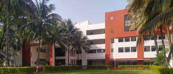
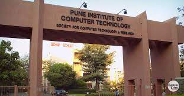
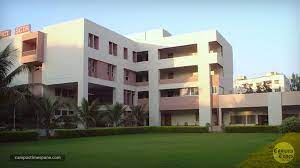

PICT believes in value-based quality education in Information and Communication Technology (ICT). PICT
constantly endeavours to achieve higher
levels of technical ingenuity through our undergraduate (UG) programmes in Computer Engineering (CE),
Electronics & Telecommunication Engineering (E&TE),
and Information Technology (IT). Our postgraduate (PG) programmes in Computer Engineering, Data Science,
Electronics & Communication
(Wireless Communication Technology), and Information Technology promote a high-quality research
environment in emerging technological domains.
PICT is a Savitribai Phule Pune University (SPPU) recognized Research Center in Computer Engineering and
Electronics & Telecommunication Engineering.

The students of PICT are always involved in creating and sustaining cutting-edge technology to surpass
the competition. Specialized laboratories/centers with industry support, like Virtual FinTech Lab, SAS
Language Lab, e-yantra IIT Bombay, National Instruments LabVIEW, AICTE-funded Center for Wireless
Communication, Alumni-funded 3D Printer Lab, etc. enable PICT students to learn in an industry-focused
environment.

A serene and charming enclave spread over 5 acres, PICT is home to 346 hostelers, 3000+ day scholars,
and 250+ staff members. A functioning canteen caters to the nutritional needs of students, staff,
parents, and visitors. A 24x7 medical facility and security personnel, make the PICT campus an
educational paradise. Facilities for sports like Basketball, Volleyball, Table Tennis, Chess, Carrom,
Gymkhana etc., help rejuvenate and restore the youthful rigor among PICTians. PICT is recognized not
only for its excellence in academics but also for its exceptional performance in sports, performing
arts, and cultural activities at the intercollegiate, university, zonal, national, and international
levels. PICT encourages sport and artistry as a tool to engage the energies of the youth, thus providing
a vital avenue for their self-actualization and expression of their capabilities.
